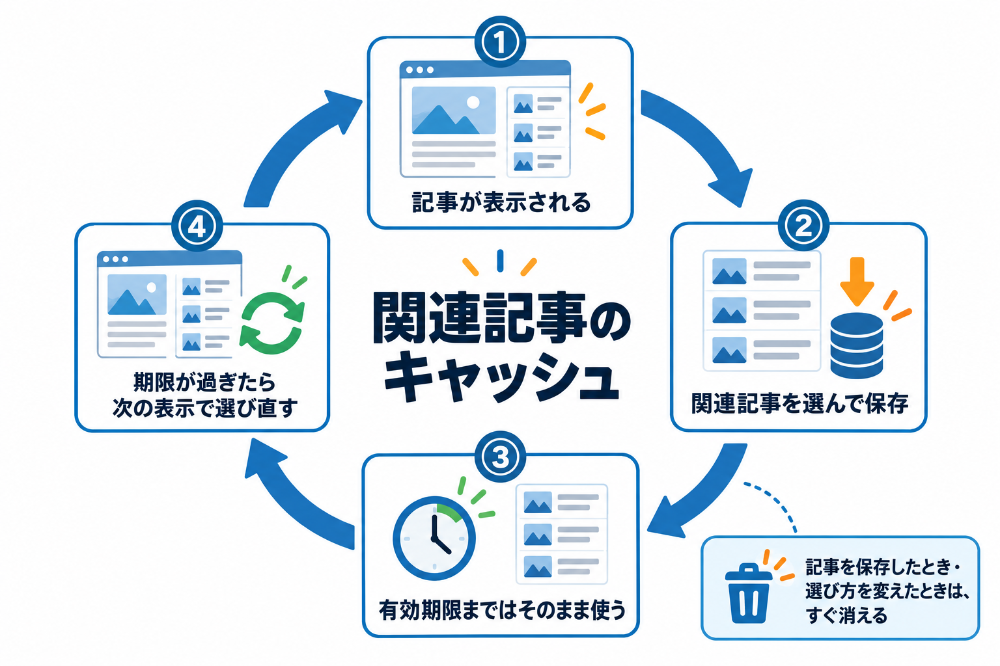

キャッシュと費用
選んだ関連記事は記事ごとに保存（キャッシュ）して使い回します。キャッシュがいつ作られ、いつ消えるか、OpenAI の費用がどこでかかるかをまとめます。

キャッシュが作られるとき
- 記事が表示され、その記事のキャッシュが無いか、期限が過ぎていたとき（その場で選んで保存します）。
- 記事の編集画面で「関連記事を取得」を押したとき。
ベクトルがまだ無い・OpenAI でエラーが出た、などで暫定の結果を表示したときは保存しません。次の表示で選び直します。
キャッシュの有効期限
共通設定（または投稿タイプ別のカスタム設定）の「キャッシュ有効期限」で決めます（1〜8,760 時間、初期値 24 時間）。期限が過ぎたキャッシュは使われず、次にその記事が表示されたときに選び直します。
| 期限 | 向いているサイト |
|---|---|
| 短い（24 時間など） | 記事をよく追加するサイト。新しい記事が早く関連記事に出ます。 |
| 長い（168 時間＝1 週間など） | 記事があまり増えないサイト。選び直しの回数が減ります。GPT を使う方式では費用も減ります。 |
キャッシュが消えるとき
| 操作 | 消える範囲 |
|---|---|
| 記事を保存した | その記事 |
| 記事の編集画面の「キャッシュクリア」 | その記事 |
| カスタム設定画面の「この投稿タイプのキャッシュをクリア」 | その投稿タイプの全記事 |
| 「すべて現在の設定値を反映」 | その投稿タイプの全記事 |
| 「関連記事の選び方」や「Embedding モデル」を変えて保存した | 全記事 |
| 「全設定をリセット」 | 全記事（ほかの設定も消えます） |
OpenAI の費用がかかるところ
| 処理 | いつ | 費用の目安 |
|---|---|---|
| 記事のベクトルを作る（Embedding） | 導入時・記事の公開や更新時・Embedding モデルを変えたとき | text-embedding-3-small は 100 万トークンで $0.02。数百記事でも 1 円未満 |
| 関連記事を選ぶ（意味の近さで選ぶ） | キャッシュを作るとき | かからない（サーバーの中で計算） |
| 関連記事を選ぶ（GPT を使う方式） | キャッシュを作るたび（記事ごと・期限ごと） | GPT モデルの料金 × 回数 |
| モデル一覧の取得・APIキーテスト | 1 日 1 回・ボタンを押したとき | かからない |
| GPT モデルの確認 | GPT モデルを変えて保存したとき 1 回 | ごくわずか |
費用を抑えるには
「意味の近さで選ぶ」を使えば、関連記事を選ぶたびの費用はかかりません。GPT を使う方式を選ぶ場合は、キャッシュ有効期限を長めにすると呼び出し回数が減ります。実際の回数は「🤖 AIのAPI設定」タブの「API呼び出し統計」で確認できます。OpenAI 側でも使用量の上限を設定しておくと安心です。